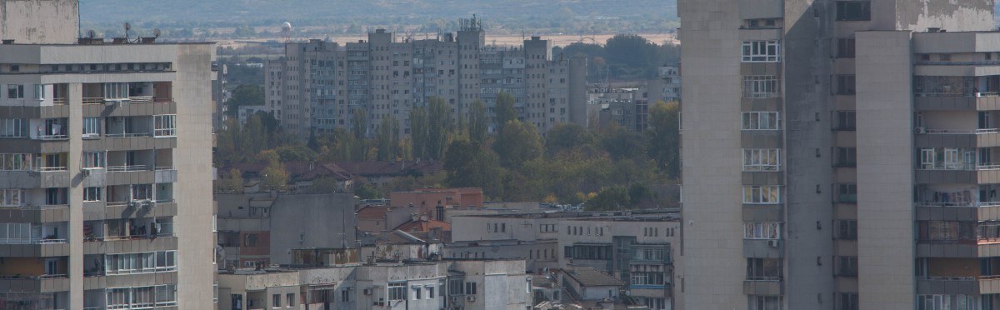
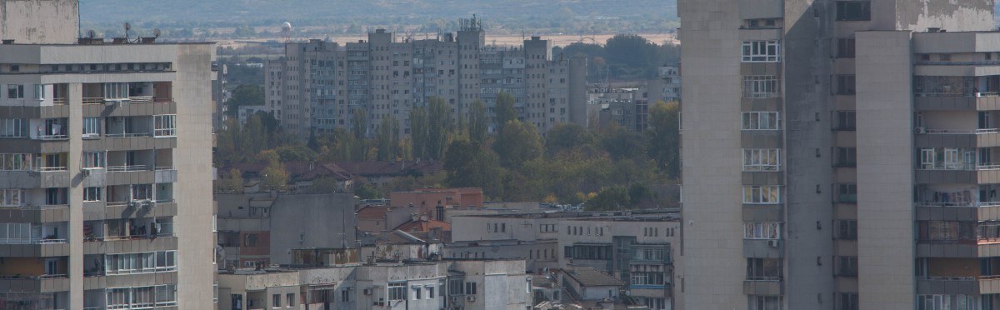
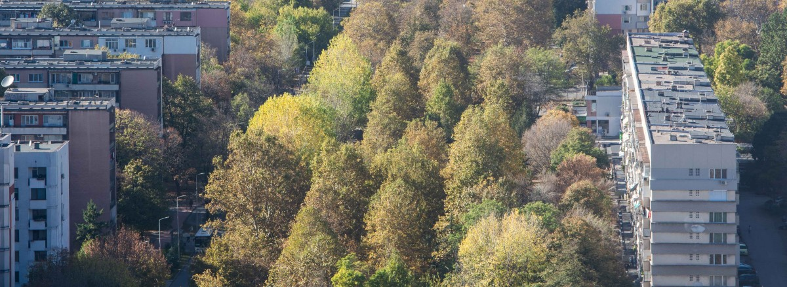
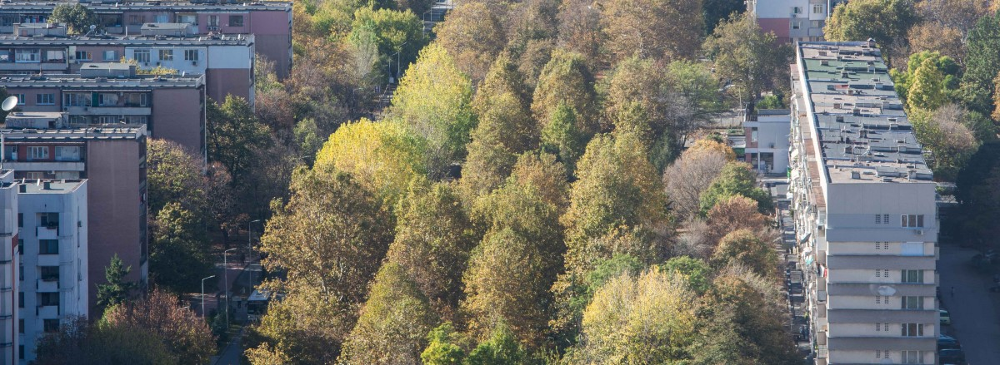

THE CANCELED FUTURE
A project funded by the Municipality of Plovdiv as part of the 2023 Context Artist-in-Residence Program.
My summer residency
Panelki apartments overlooking grassy playgrounds,
lush boulevards cutting through rigid residential blocks,
unfinished monuments spreading over the landscapes of city outskirts…
These scenes shift through the bus windows and stretch all the way throughout my walk to the touristy old town,
connecting my first Plovdiv impression to my fading childhood memory.
 

 
As an architect and urban designer who grew up in post-socialist China and lived most of the adulthood abroad, I am always interested in the canceled futures of architectural imagination, particularly those overturned by the fall of communism. The transition of such happens drastically in China through enormous public investment on consumer-oriented urban redevelopment, under which my hometown Zhengzhou has removed most of its socialist identities in exchange of wider highways, business districts, and real-estate developments. On the other hand, these updated futures come with atomized urban communities and skyrocketing living costs, which are turning into another collective disappointment following its communist precedent.
The remaining 'Danwei' socialist housing blocks in Zhengzhou, China.In contrast to Zhengzhou’s rapidly vanishing socialist marks, the aging panelki housing blocks of Plovdiv represents a frozen state of temporality: one that was initially planned to last 20-25 years as transitional developments toward communist utopias. The utopia never came, whereas its architectural leftovers continue to define the city. After witnessing Zhengzhou’s disappointed reborn, I am eager to seek the radical impulses of canceled futures that once shared by Plovdiv people when they were given the keys to their ‘temporary’ panelki home.
 Soviet futurism posters from different periods.
Soviet futurism posters from different periods.
What if,
in an alternative past, present, or future,
the promised utopia came true?
The Project

Through combined experiments of panoramic photography, speculative design, AI image generation, and Web-VR development, this project animates Plovdiv's recursive urban transformation towrads its canceled futures. The resulting Web-VR scenes match the 4 selected views from Plovdiv’s two iconic hills: one from the terrace of Dzambaz Tepe in the touristy old town and three from Burnardzhika Tepe that overlooks the greater metropolitan area. The viewpoint selection is made with curatorial measures for the project’s on-site access: the former serves as a tourist hook to introduce the concept and the latter delivers broader panoramas of the city. When visiting these viewpoints, audiences can find QR-code access to the corresponding scenes and see Plovdiv's transformation between the present images and their canceled futures on their mobile screen, meanwhile having the real-world counterpart to complete the immersive experience.
 The 4 selected viewpoints for Web-VR experience.
The 4 selected viewpoints for Web-VR experience. Examples of views to be transformed.
Examples of views to be transformed.In addition to viewing the scenes through QR-code accesses at corresponding viewpoints,
you can preview the animations by clicking the [SCENES] below and navigate to the viewpoints using the Google Map pins.
Note: the QR-code sticker for the Dzambaz Tepe scene is located at the tourist info center,
which directs you to the view terrace.